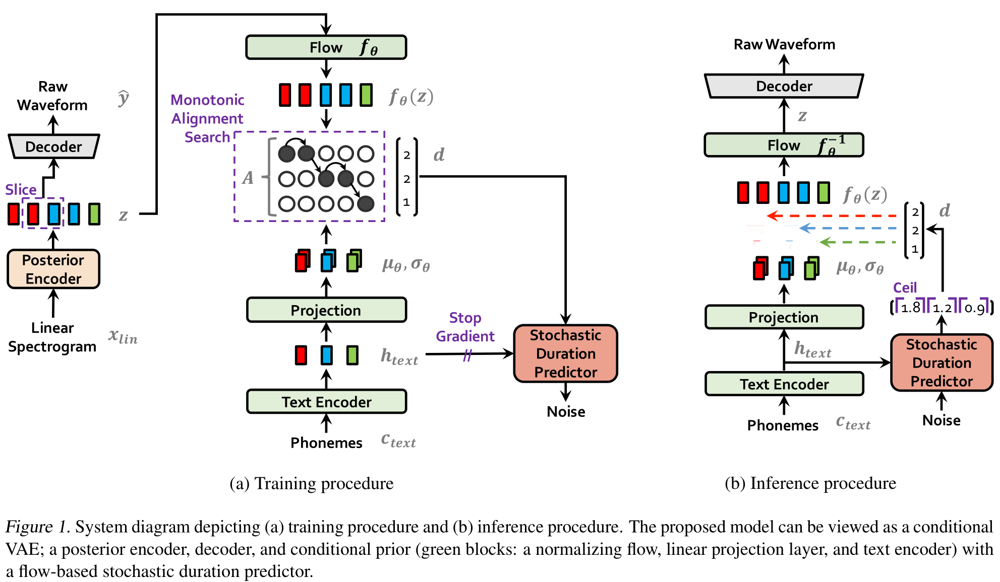
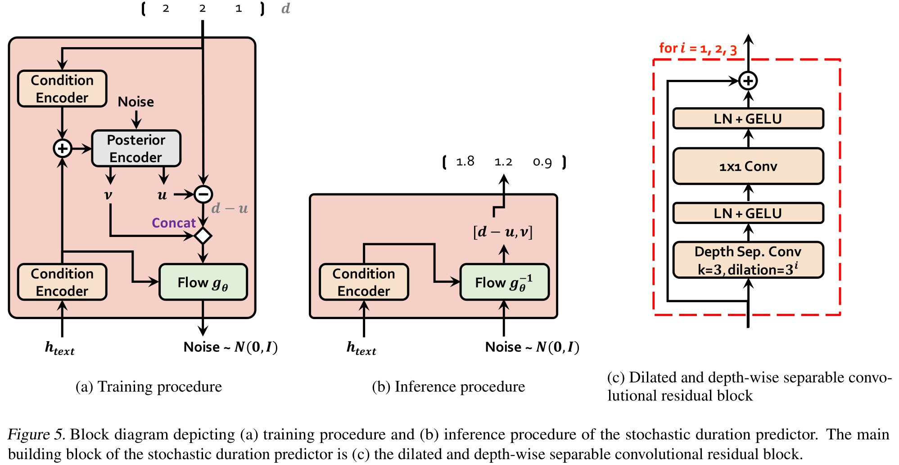
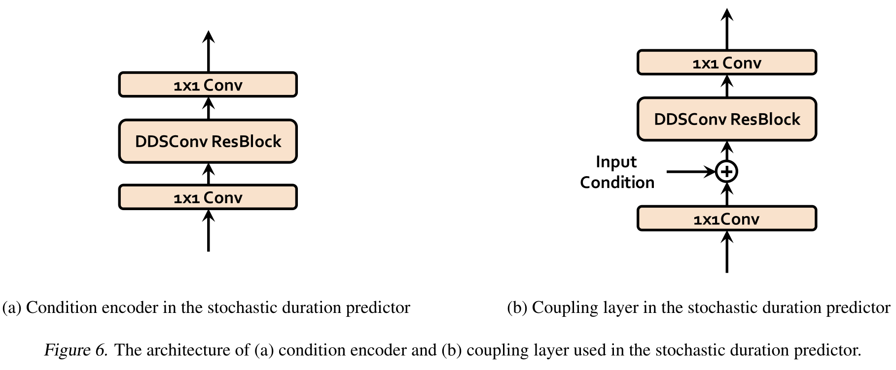

Conditional Variational Autoencoder with Adversarial Learning for End-to-End Text-to-Speech¶
Jaehyeon Kim Jungil Kong Juhee Son
Abstract·摘要¶
Several recent end-to-end text-to-speech (TTS) models enabling single-stage training and parallel sampling have been proposed, but their sample quality does not match that of two-stage TTS systems. In this work, we present a parallel end to-end TTS method that generates more natural sounding audio than current two-stage models. Our method adopts variational inference augmented with normalizing flows and an adversarial training process, which improves the expressive power of generative modeling. We also propose a stochastic duration predictor to synthesize speech with diverse rhythms from input text. With the uncertainty modeling over latent variables and the stochastic duration predictor, our method expresses the natural one-to-many relationship in which a text input can be spoken in multiple ways with different pitches and rhythms. A subjective human evaluation (mean opinion score, or MOS) on the LJ Speech, a single speaker dataset, shows that our method outperforms the best publicly available TTS systems and achieves a MOS com parable to ground truth.
近期几项端到端文本转语音模型使得单阶段训练和并行采样成为可能, 但它们的采样质量与两阶段系统的质量相比仍有差距. 在本文中，我们提出了一个并行的端到端文本转语音方法, 其生成的音频更自然. 我们的方法使用标准化流和对抗训练增强的变分推断, 这可以提高生成模型的表现力. 我们还提出了一个随机时长预测器用于从输入文本生成多种节奏的语音. 通过对隐变量的不确定性建模和随机时长预测器, 我们的模型可以表达自然的一对多关系, 即一个文本输入可以被说成多种音高和节奏. 在 LJ Speech 数据集的主观评价 (MOS) 中, 我们对比了我们的模型与最先进的公开可用的文本转语音系统, 并达到了可比的MOS.
1.Introduction·引言¶
Text-to-speech (TTS) systems synthesize raw speech waveforms from given text through several components. With the rapid development of deep neural networks, TTS system pipelines have been simplified to two-stage generative modeling apart from text preprocessing such as text normalization and phonemization. The first stage is to produce intermediate speech representations such as mel-spectrograms (Tacotron2 (2017)) or linguistic features (Oord et al., 2016) from the preprocessed text (Although there is a text preprocessing step in TTS systems, We herein use preprocessed text interchangeably with the word "text".), and the second stage is to generate raw waveforms conditioned on the intermediate representations (WaveNet (2016); WaveRNN (2018)). Models at each of the two-stage pipelines have been developed independently.
文本转语音系统通过数个组件从给定的文本生成原始语音波形. 随着深度神经网络的迅速发展, 文本转语音系统已经简化为除了文本预处理 (文本规范化和音素化) 之外的两阶段生成模型. 第一阶段是生成中间语音表示如梅尔频谱图或来自预处理文本的语言特征, 第二阶段是根据中间表示生成原始波形. 每个阶段的模型都单独建立.
Neural network-based autoregressive TTS systems have shown the capability of synthesizing realistic speech (Tacotron2 (2017); [Transformer-TTS (2018)](../2018.09_Transform../../Papers/2018.09_Transformer_TTS/2018.09_Transformer_TTS.mdtial generative process makes it difficult to fully utilize modern parallel processors. To overcome this limitation and improve synthesis speed, several non-autoregressive methods have been proposed. In the text-to-spectrogram generation step, extracting attention maps from pre-trained autoregressive teacher networks (FastSpeech (2019); ParaNet) is attempted to decrease the difficulty of learning alignments between text and spectrograms. More recently, likelihood-based methods further eliminate the dependency on external aligners by estimating or learning alignments that maximize the likelihood of target mel-spectrograms (AlignTTS (2020); Flow-TTS (2020); Glow-TTS (2020)). Meanwhile, Generative Adversarial Networks (GANs) have been explored in second stage models. GAN-based feed-forward networks with multiple discriminators, each distinguishing samples at different scales or periods, achieve high-quality raw waveform synthesis (MelGAN (2019); GAN-TTS (2019).
基于神经网络的文本转语音系统已经展示了合成真实语音的能力, 但它们的顺序生成过程使得它们难以充分利用现代并行处理器. 为了克服这一限制并提升合成速度, 已经有数种非自回归方法被提出. 在文本到频谱图生成步骤中, 从预训练的自回归教师网络中提取注意力特征图试图减少学习文本和频谱图之间对齐的难度. 近期, 基于似然的方法进一步消除了对外部对齐器的依赖, 通过最大化目标频谱图的似然来估计或学习对齐. 同时, 生成对抗网络被用于第二阶模型. 基于 GAN 的前馈网络具有多个判别器, 每个判别不同尺度或周期的样本, 实现高质量的原始波形合成.
Despite the progress of parallel TTS systems, two-stage pipelines remain problematic because they require sequential training or fine-tuning (Tacotron2 (2017); Wave-Tacotron (2020)) for high-quality production wherein latter stage models are trained with the generated samples of earlier stage models. In addition, their dependency on predefined intermediate features precludes applying learned hidden representations to obtain further improvements in performance. Recently, several works, i.e., FastSpeech 2s (2020) and EATS (2020), have proposed efficient end-to-end training methods such as training over short audio clips rather than entire waveforms, leveraging a mel-spectrogram decoder to aid text representation learning, and designing a specialized spectrogram loss to relax length-mismatch between target and generated speech. However, despite potentially improving performance by utilizing the learned representations, their synthesis quality lags behind two-stage systems.
尽管并行文本转语音系统取得了进展, 但两阶段方案仍然存在问题. 因为它们要求顺序训练或微调以获取高质量结果, 即后一阶段的模型需要在前一阶段模型的生成样本上进行训练. 此外, 他们依赖于预定义的中间特征限制了将学习到的隐藏表示以获得进一步的性能提升. 近期, 有几项工作如 FastSpeech 2s (2020) 和 EATS 提出了高效的端到端训练方法, 如训练于较短的音频片段而不是完整波形, 利用梅尔频谱图解码器辅助文本表示学习, 并设计专门的频谱图损失以松弛目标和生成语音的长度不匹配. 然而, 尽管利用学习到的表示可以提升性能, 但它们的合成质量仍然落后于两阶段系统.
In this work, we present a parallel end-to-end TTS method that generates more natural sounding audio than current two-stage models. Using a Variational AutoEncoder (VAE), we connect two modules of TTS systems through latent variables to enable efficient end-to-end learning. To improve the expressive power of our method so that high-quality speech waveforms can be synthesized, we apply normalizing flows to our conditional prior distribution and adversarial training on the waveform domain. In addition to generating fine-grained audio, it is important for TTS systems to express the one-to-many relationship in which text input can be spoken in multiple ways with different variations (e.g., pitch and duration). To tackle the one-to-many problem, we also propose a stochastic duration predictor to synthesize speech with diverse rhythms from input text. With the uncertainty modeling over latent variables and the stochastic duration predictor, our method captures speech variations that cannot be represented by text.
本项工作中, 我们提出了一个并行的端到端的文本转语音方法, 其生成的音频更自然. 我们使用变分自编码器 (VAE) 将两个文本转语音系统的模块连接起来, 以实现高效的端到端学习. 为了提高我们的方法的表现力, 我们将标准化流应用到条件先验分布, 并在波形域上进行对抗训练. 除了生成细粒度的音频之外, 对于文本转语音系统来说, 表达一对多关系是至关重要的, 即输入文本可以以不同的音高和节奏被说出来. 为了解决这一问题, 我们还提出了一个随机时长预测器, 用于从输入文本生成多种节奏的语音. 通过对隐变量的不确定性建模和随机时长预测器, 我们的模型可以捕捉到不能用文本表示的语音变体.
Our method obtains more natural sounding speech and higher sampling efficiency than the best publicly available TTS system, Glow-TTS (2020) wit../Vocoder/2020.10_HiFi-GAN.md/2020.10_HiFi-GAN.md). We make both our demo page and source-code publicly available.
我们的方法获得更自然的语音和更高的采样效率.
2.Related Works·相关工作¶
注: 原文第五节 Section 5 in Original.
2.1.End-to-End Text-to-Speech·端到端文本转语音¶
Currently, neural TTS models with a two-stage pipeline can synthesize human-like speech (WaveNet (2016); DeepVoice3; [Tacotron../Acoustic/2017.12_Tacotron2.mdcotron2.md)). However, they typically require vocoders trained or fine-tuned with first stage model output, which causes training and deployment inefficiency. They are also unable to reap the potential benefits of an end-to-end approach that can use learned hidden representations rather than predefined intermediate features.
当前两阶段的神经文本转语音模型可以合成类似人类的语音. 然而他们同样要求使用第一阶段模型的输出用于训练或微调声码器, 这会导致训练和部署效率低下. 他们还无法利用端到端方法的潜在优势, 即可以利用学习到的隐藏表示而非预定义的中间特征.
Recently, single-stage end-to-end TTS models have been proposed to tackle the more challenging task of generating raw waveforms, which contain richer information (e.g., high-frequency response and phase) than mel-spectrograms, directly from text. FastSpeech 2s (2020) is an extension of FastSpeech 2 that enables end-to-end parallel generation by adopting adversarial training and an auxiliary mel-spectrogram decoder that helps learn text representations. However, to resolve the one-to-many problem, FastSpeech 2s must extract phoneme duration, pitch, and energy from speech used as input conditions in training. EATS (2020) employs adversarial training as well and a differentiable alignment scheme. To resolve the length mismatch problem between generated and target speech, EATS adopts soft dynamic time warping loss that is calculated by dynamic programming. Wave-Tacotron (2020) combines normalizing flows with Tacotron 2 for an end-to-end structure but remains autoregressive. The audio quality of all the aforementioned end-to-end TTS models is less than that of two-stage models.
最近单阶段文本转语音模型被提出用于解决生成原始波形的更具挑战性任务, 它包含比梅尔频谱图更多的信息 (如高频响应和相位), 直接从文本生成. FastSpeech 2s 是 FastSpeech 2 的扩展, 它通过采用对抗训练和一个辅助的梅尔频谱图解码器来实现端到端并行生成. 然而, 为了解决一对多问题, FastSpeech 2s 必须从训练时使用的语音中提取音素时长, 音高和能量. EATS 也是采用对抗训练和不同的对齐方案. 为了解决生成和目标语音之间的长度不匹配问题, EATS 采用软动态时间窗损失, 它是通过动态规划计算的. Wave Tacotron 是将标准化流与 Tacotron 2 结合用于端到端结构, 但仍然是自回归的. 所有这些端到端文本转语音模型的语音质量都不如两阶段模型.
Unlike the aforementioned end-to-end models, by utilizing a conditional VAE, our model
- learns to synthesize raw waveforms directly from text without requiring additional input conditions,
- uses a dynamic programming method, MAS, to search the optimal alignment rather than to calculate loss,
- generates samples in parallel,
- outperforms the best publicly available two-stage models.
和前面提及的端到端模型不同, 通过使用条件变分自编码器, 我们的模型: 1. 直接从文本生成原始波形而不需要额外的输入条件, 2. 使用动态规划方法 MAS 搜索最优对齐而不是计算损失, 3. 以并行的方式生成样本, 4. 性能超过了最先进的公开可用的两阶段模型.
2.2.Variational Autoencoders·变分自编码器¶
VAEs are one of the most widely used likelihood-based deep generative models. We adopt a conditional VAE to a TTS system. A conditional VAE is a conditional generative model where the observed conditions modulate the prior distribution of latent variables used to generate outputs. In speech synthesis, GMVAE-Tacotron (2018) and Learning latent representations for style control and transfer in end-to-end speech synthesis combine Tacotron 2 and VAEs to learn speech style and prosody. BVAE-TTS (2020) generates mel-spectrograms in parallel based on a bidirectional VAE (IAF (2016)). Unlike the previous works that applied VAEs to first stage models, we adopt a VAE to a parallel end-to-end TTS system. Variational inference with normalizing flows, Variational Lossy Autoencoder and Latent normalizing flows for discrete sequences improve VAE performance by enhancing the expressive power of prior and posterior distribution with normalizing flows. To improve the representation power of the prior distribution, we add normalizing flows to our conditional prior network, leading to the generation of more realistic samples.
变分自编码器 (VAEs) 是最常用的基于似然的深度生成模型之一. 我们将条件变分自编码器用于文本转语音系统. 条件变分自编码器是一种条件生成模型, 其中观察到的条件会影响用于生成输出的隐变量的先验分布. 在语音合成中, Hsu 和 Zhang 将 Tacotron2 和变分自编码器结合以学习语音风格和韵律. BVAE-TTS 基于双向变分自编码器以并行生成梅尔频谱. 和这些将变分自编码器用于第一阶段模型的工作不同, 我们将变分自编码器用于并行端到端文本转语音系统. Rezende, Chen, Ziegler 通过使用标准化流增强先验和后验分布表现性以提高变分自编码器的性能. 为了提升先验分布的表示能力, 我们在条件先验网络中加入了标准化流, 从而能够生成更真实的样本.
Similar to our work, Flowseq proposed a conditional VAE with normalizing flows in a conditional prior network for non-autoregressive neural machine translation, FlowSeq. However, the fact that our model can explicitly align a latent sequence with the source sequence differs from FlowSeq, which needs to learn implicit alignment through attention mechanisms. Our model removes the burden of transforming the latent sequence into standard normal random variables by matching the latent sequence with the time-aligned source sequence via MAS, which allows for simpler architecture of normalizing flows.
和我们的工作类似, Ma 等人提出了 FlowSeq 一个带有标准化流的条件变分自编码器, 用于非自回归神经机器翻译. 然而, 由于我们的模型可以显式地对齐隐变量序列和源序列, 与 FlowSeq 不同, 它需要通过注意机制学习隐式对齐. 我们的模型通过 MAS 匹配隐变量序列和时间对齐的源序列, 从而消除了将隐变量序列转换为标准正态随机变量的负担, 这使得标准化流的架构更简单.
2.3.Duration Prediction in Non-Autoregressive Text-to-Speech·非自回归文本转语音中的时长预测¶
Autoregressive TTS models (VoiceLoop (2017.07); Tacotron); Flowtron (2021) diverse speech with different rhythms through their autoregressive structure and several tricks including maintaining dropout probability during inference and priming (Generating sequences with recurrent neural networks). Parallel TTS models (FastSpeech (2019); ParaNet (2020); Glow-TTS (2020); FastSpeech 2s (2020), on the other hand, have been relied on deterministic duration prediction. It is because parallel models have to predict target phoneme duration or the total length of target speech in one feed-forward path, which makes it hard to capture the correlated joint distribution of speech rhythms. In this work, we suggest a flow-based stochastic duration predictor that learns the joint distribution of the estimated phoneme duration, resulting in the generation of diverse speech rhythms in parallel.
自回归文本转语音模型通过他们的自回归结构和一些技巧包括在推理维持随机失活率等等生成具有不同节奏的多样语音. 并行文本转语音模型则依赖于确定性的时长预测, 这是因为并行模型必须在一个前馈路径中预测目标音素时长或目标语音的总长度, 这使得难以捕捉语音节奏的相关联合分布. 在本文中, 我们提出了一个基于流的随机时长预测器, 它学习估计的音素时长的联合分布, 从而在并行生成中生成具有不同节奏的多样语音.
3.Method¶
In this section, we explain our proposed method and the architecture of it. The proposed method is mostly described in the first three subsections: a conditional VAE formulation; alignment estimation derived from variational inference; adversarial training for improving synthesis quality. The overall architecture is described at the end of this section. Fig.01a and Fig.01b show the training and inference procedures of our method, respectively. From now on, we will refer to our method as Variational Inference with adversarial learning for end-to-end Text-to-Speech (VITS).

本节将解释我们提出的方法及其架构. 在前三个小节中, 我们将介绍所提出的方法的主要内容: 条件变分自编码器形式; 由变分推断得到的对齐估计; 对抗训练以提高合成质量. 最后一小节将介绍整体架构. 图 01a 和图 01b 分别展示了训练和推理过程. 之后, 我们将使用 VITS 来指代我们提出的方法.
3.1.Variational Inference·变分推断¶
3.1.1.Overview·概览¶
VITS can be expressed as a conditional VAE with the objective of maximizing the variational lower bound, also called the evidence lower bound (ELBO), of the intractable marginal log-likelihood of data $\log p_{\theta}(x|c)$:
VITS 可以表示为一个条件自编码器, 其目标是最大化难以处理的数据的边际分布对数似然 $\log p_{\theta}(x|c)$ 的变分下界, 也称为证据下界 (Evidence Lower BOund, ELBO).
$$ \log p_{\theta}(x|c) \geq E_{q_{\phi}(z|x)}\left[\log p_{\theta}(x|z)-\log\dfrac{q_{\phi}(z|x)}{p_{\theta}(z|c)}\right] \tag{1} $$
where $p_{\theta}(z|c)$ denotes a prior distribution of the latent variables $z$ given condition $c$, $p_{\theta}(x|z)$ is the likelihood function of a data point $x$, and $q_{\phi}(z|x)$ is an approximate posterior distribution.
- $p_{\theta}(z|c)$: 给定条件 $c$ 的隐变量 $z$ 的先验分布.
- $p_{\theta}(x|z)$: 数据点 $x$ 的似然函数.
- $q_{\phi}(z|x)$: 近似后验分布.
The training loss is then the negative ELBO, which can be viewed as the sum of reconstruction loss $-\log p_{\theta}(x|z)$ and KL-divergence $\log q_{\phi}(z|x) -\log | p_{\theta}(z|c)$, where $z\sim q_{\phi}(z|x)$.
训练损失为负的 ELBO, 它可以被视为重构损失 $-\log p_{\theta}(x|z)$ 和 KL 散度 $\log q_{\phi}(z|x) -\log | p_{\theta}(z|c)$ 的总和, 其中 $z\sim q_{\phi}(z|x)$.
3.1.2.Reconstruction Loss·重构损失¶
As a target data point in the reconstruction loss, we use a mel-spectrogram instead of a raw waveform, denoted by $x_{mel}$. We upsample the latent variables $z$ to the waveform domain $\hat{y}$ through a decoder and transform $\hat{y}$ to the mel-spectrogram domain $\hat{x}_{mel}$. Then the $L_1$ loss between the predicted and target mel-spectrogram is used as the reconstruction loss:
重构损失中使用的目标数据点是梅尔频谱而不是原始波形, 记为 $x_{mel}$. 我们通过一个解码器将隐变量 $z$ 上采样到波形域 $\hat{y}$, 并将 $\hat{y}$ 转换到梅尔频谱域 $\hat{x}_{mel}$. 然后, 我们使用预测的和目标的梅尔频谱之间的 $L_1$ 损失作为重构损失:
$$ Loss_{recon}= |x_{mel}−\hat{x}_{mel}|_1 \tag{2} $$
This can be viewed as maximum likelihood estimation assuming a Laplace distribution for the data distribution and ignoring constant terms.
这可以视为假设数据分布为 Laplace 分布, 并忽略常数项后的最大似然估计.
We define the reconstruction loss in the mel-spectrogram domain to improve the perceptual quality by using a mel-scale that approximates the response of the human auditory system. Note that the mel-spectrogram estimation from a raw waveform does not require trainable parameters as it only uses STFT and linear projection onto the mel-scale. Furthermore, the estimation is only employed during training, not inference. In practice, we do not upsample the whole latent variables $z$ but use partial sequences as an input for the decoder, which is the windowed generator training used for efficient end-to-end training (FastSpeech 2s (2020); EATS (2020)).
我们在梅尔频谱域中定义了重构损失, 以提高感知质量, 因为它使用一个近似人类听觉系统响应的梅尔刻度. 注意, 从原始波形估计梅尔频谱不需要可训练参数, 因为它只使用短时傅里叶变换和线性投影到梅尔刻度. 此外, 估计仅在训练过程中使用, 而推理时不使用. 实际上, 我们不上采样整个隐变量 $z$, 而是使用部分序列作为解码器的输入, 这与用于高效端到端训练的窗口生成器训练相同.
3.1.3.KL-Divergence·KL 散度¶
The input condition of the prior encoder $c$ is composed of phonemes $c_{text}$ extracted from text and an alignment $A$ between phonemes and latent variables.
先验编码器的输入条件 $c$ 由文本中提取的音素 $c_{text}$, 音素和隐变量之间的对齐 $A$ 组成.
The alignment is a hard monotonic attention matrix with $|c_{text}|\times|z|$ dimensions representing how long each input phoneme expands to be time-aligned with the target speech. Because there are no ground truth labels for the alignment, we must estimate the alignment at each training iteration, which we will discuss in Section 2.2.1.
这个对齐是一个维度为 $|c_{text}|\times|z|$ 硬性单调注意力矩阵, 表示每个输入音素扩展到与目标语音时间对齐的时间长度. 因为对齐没有真实标签, 我们必须在每一次训练迭代中估计对齐, 我们将在第 3.2.1 节中讨论.
In our problem setting, we aim to provide more high-resolution information for the posterior encoder. We, therefore, use the linear-scale spectrogram of target speech $x_{lin}$ as input rather than the mel-spectrogram. Note that the modified input does not violate the properties of variational inference.
在我们的问题设置中, 我们希望为后验编码器提供更多高分辨率信息. 因此, 我们使用目标语音的线性频谱 $x_{lin}$ 作为输入, 而不是梅尔频谱. 注意, 我们修改的输入并不违反变分推断的性质.
The KL divergence is then:
KL 散度为:
$$ Loss_{kl} = \log q_{\phi}(z|x) -\log p_{\theta}(z|c_{text},A) \tag{3} $$
$$ z\sim q_{\phi}(z|x) =\mathcal{N}(z;\mu_{\phi}(x_{lin}), \sigma_{\phi}(x_{lin})) $$
The factorized normal distribution is used to parameterize our prior and posterior encoders.
我们使用因子正态分布来参数化我们的先验和后验编码器.
We found that increasing the expressiveness of the prior distribution is important for generating realistic samples. We, therefore, apply a normalizing flow $f_{\theta}$ (Variational inference with normalizing flows), which allows an invertible transformation of a simple distribution into a more complex distribution following the rule of change-of-variables, on top of the factorized normal prior distribution:
我们发现增加先验分布的表现性对于生成真实样本至关重要. 因此, 我们在因子正态先验分布上应用了一个标准化流 $f_{\theta}$, 它能够构建一个简单分布通过变量变换规则转换为到一个更复杂分布的可逆变换:
$$ p_{\theta}(z|c) = \mathcal{N}(f_{\theta}(z);\mu_{\theta}(c),\sigma_{\theta}(c))|\det\dfrac{\partial f_{\theta}(z)}{\partial z}| \tag{4} $$
其中 $c=[c_{text}, A]$
3.2.Alignment Estimation·对齐估计¶
3.2.1.Monotonic Alignment Search·单调对齐搜索¶
To estimate an alignment $A$ between input text and target speech, we adopt Monotonic Alignment Search (MAS), a method to search an alignment that maximizes the likelihood of data parameterized by a normalizing flow $f$:
为了估计文本和目标语音之间的对齐 $A$, 我们采用单调对齐搜索 (Monotonic Alignment Search, MAS), 该方法搜索一个对齐, 使得由标准化流 $f$ 参数化的数据的似然最大化:
$$ \begin{aligned} A &= \arg\max_{\hat{A}}\log p_{\theta}(x_{mel}|c_{text},\hat{A}) \ &= \arg\max_{\hat{A}}\log\mathcal{N}(f(x);\mu(c_{text},\hat{A}),\sigma(c_{text},\hat{A})) \end{aligned}\tag{5} $$
where the candidate alignments are restricted to be monotonic and non-skipping following the fact that humans read text in order without skipping any words.
其中候选对齐被限制为单调且不跳过任何单词, 因为人类阅读文本是有序的且不会跳过任何单词.
To find the optimal alignment, Glow-TTS (2020) use dynamic programming. Applying MAS directly in our setting is difficult because our objective is the ELBO, not the exact log-likelihood. We, therefore, redefine MAS to find an alignment that maximizes the ELBO, which reduces to finding an alignment that maximizes the log-likelihood of the latent variables $z$:
为了找到最优对齐, Glow-TTS (2020) 使用动态规划. 在我们的设置中直接应用 MAS 困难, 因为我们的目标是 ELBO, 而不是精确的对数似然. 因此, 我们重新定义 MAS, 寻找一个对齐, 使得 ELBO 最大化, 这等价于寻找一个对齐, 使得隐变量 $z$ 的对数似然最大化:
$$ \begin{aligned} &\arg\max_{\hat{A}}\log p_{\theta}(x_{mel}|z)-\log\frac{q_{\phi}(z|x_{lin})}{p_{\theta}(z|c_{text},\hat{A})} \ &=\arg\max_{\hat{A}}\log p_{\theta}(z|c_{text},\hat{A}) \ &=\arg\max_{\hat{A}}\log \mathcal{N}(f_\theta(z);\mu_\theta(c_{text},\hat{A}),\sigma_\theta(c_{text},\hat{A})) \end{aligned} $$
Due to the resemblance of Eq.05 to Eq.06, we can use the original MAS implementation without modification. Appendix A includes pseudocode for MAS. Although we search the alignment which maximizes the ELBO not the exact log-likelihood of data, we can use the MAS implementation of Glow-TTS as described in Section 2.2.1.
由于方程 05 和方程 06 的相似性, 我们可以使用原始的 MAS 实现而无需修改. 附录 A 包含 MAS 的伪代码. 尽管我们搜索 ELBO 最大的对齐, 而不是数据精确的对数似然, 但我们可以使用 Glow-TTS 的 MAS 实现.
def monotonic_alignment_search(value):
"""Returns the most likely alignment for the given log-likelihood matrix.
Args:
value: the log-likelihood matrix. Its (i, j)-th entry contains
the log-likelihood of the j-th latent variable
for the given i-th prior mean and variance:
.. math::
value_{i,j} = log N(f(z)_{j}; \mu_{i}, \sigma_{i})
(dtype=float, shape=[text_length, latent_variable_length])
Returns:
path: the most likely alignment.
(dtype=float, shape=[text_length, latent_variable_length])
"""
t_x, t_y = value.shape # [text_length, letent_variable_length]
path = zeros([t_x, t_y])
# A cache to store the log-likelihood for the most likely alignment so far.
Q = -INFINITY * ones([t_x, t_y])
for y in range(t_y):
for x in range(max(0, t_x + y - t_y), min(t_x, y + 1)):
if y == 0: # Base case. If y is 0, the possible x value is only 0.
Q[x, 0] = value[x, 0]
else:
if x == 0:
v_prev = -INFINITY
else:
v_prev = Q[x-1, y-1]
v_cur = Q[x, y-1]
Q[x, y] = value[x, y] + max(v_prev, v_cur)
# Backtrack from last observation.
index = t_x - 1
for y in range(t_y - 1, -1, -1):
path[index, y] = 1
if index != 0 and (index == y or Q[index, y-1] < Q[index-1, y-1]):
index = index - 1
return path
源代码采用 Cython 编写:
- 定义函数 maximum_path_each(), 接受一个二维数组 path, 二维数组 value, 两个整数 t_x, t_y, 以及一个浮点数 max_neg_val. 用于计算每个路径的最大值.
- 定义函数 maximum_path_c(), 接受三个三维数组 paths, values 和两个一维数组 t_xs 和 t_ys, 以及一个浮点数 max_neg_val. 用于计算所有路径的最大值.
3.2.2.Duration Prediction from Text·文本中的时长预测¶
We can calculate the duration of each input token $d_i$ by summing all the columns in each row of the estimated alignment $\sum_j A_{i,j}$. The duration could be used to train a deterministic duration predictor, as proposed in previous work (HiFi-GAN (2020)), but it cannot express the way a person utters at different speaking rates each time. To generate human-like rhythms of speech, we design a stochastic duration predictor so that its samples follow the duration distribution of given phonemes. The stochastic duration predictor is a flow-based generative model that is typically trained via maximum likelihood estimation. The direct application of maximum likelihood estimation, however, is difficult because the duration of each input phoneme is 1. a discrete integer, which needs to be dequantized for using continuous normalizing flows, 2. a scalar, which prevents high-dimensional transformation due to invertibility.
我们可以通过对估计的对齐的每一行中所有列求和以计算每个输入 Token $d_i$ 的时长, 即 $\sum_j A_{i,j}$. 时长可以用于训练一个确定性的时长预测器, 如 HiFi-GAN (2020) 所提出的, 但它不能表达人类在不同语速下说话的方式. 为了生成类似人类语调的语音, 我们设计了一个随机时长预测器, 使得其采样符合给定音素的时长分布. 随机时长预测器是一个基于流的生成模型, 通常通过极大似然估计进行训练. 然而, 直接应用极大似然估计是困难的, 因为每个输入音素的时长是: 1. 一个离散整数, 这需要对其去量化以便使用连续标准化流, 2. 一个标量, 由于可逆性而阻碍了高维变换.
We apply variational dequantization (Flow++ (2019)) and variational data augmentation (VFlow (2020)) to solve these problems. To be specific, we introduce two random variables $u$ and $ν$, which have the same time resolution and dimension as that of the duration sequenced, for variational dequantization and variational data augmentation, respectively. We restrict the support of $u$ to be $[0, 1)$ so that the difference $d−u$ becomes a sequence of positive real numbers, and we concatenate $ν$ and $d$ channel-wise to make a higher dimensional latent representation. We sample the two variables through an approximate posterior distribution $q_{\phi}(u, ν|d, c_{text})$. The resulting objective is a variational lower bound of the log-likelihood of the phoneme duration:
我们应用变分去量化和变分数据增强以解决这些问题. 具体地, 我们引入两个随机变量 $u$ 和 $v$, 拥有和时长序列相同的时间分辨率和维度, 分别用于变分去量化和变分数据增强. 我们将 $u$ 的支持限制为 $[0, 1)$, 这样 $d-u$ 变成一系列正实数, 并将 $ν$ 和 $d$ 逐通道拼接以生成更高维的潜在表示. 我们通过近似后验分布 $q_{\phi}(u, v|d, c_{text})$ 采样这两个变量. 最后得到的目标是音素时长的对数似然的变分下界:
$$ \log p_{\theta}(d|c_{text}) \geq E_{q_{\phi}(u, ν|d, c_{text})} \left[\log\dfrac{p_{\theta}(d-u,v|c_{text})}{q_{\phi}(u,v|d,c_{text})}\right]\tag{7} $$
The training loss $Loss_{dur}$ is then the negative variational lower bound. We apply the stop gradient operator (Neural discrete representation learning), which prevents back-propagating the gradient of inputs, to the input conditions so that the training of the duration predictor does not affect that of other modules.
训练损失 $Loss_{dur}$ 则是负变分下界. 我们应用对输入条件应用停止梯度算子 (防止梯度反向传播) 以便训练时长预测器不影响其他模块.
The sampling procedure is relatively simple; the phoneme duration is sampled from random noise through the inverse transformation of the stochastic duration predictor, and then it is converted to integers.
采样过程相对简单; 音素时长通过随机时长预测器的逆变换从随机噪声中采样, 然后将其转换为整数.
3.3.Adversarial Training·对抗训练¶
To adopt adversarial training in our learning system, we add a discriminator $D$ that distinguishes between the output generated by the decoder $G$ and the ground truth waveform $y$. In this work, we use two types of loss successfully applied in speech synthesis; the least-squares loss function (LSGAN (2016)) for adversarial training, and the additional feature-matching loss (Autoencoding beyond pixels using a learned similarity metric) for training the generator:
为了在我们的学习系统中采用对抗训练, 我们添加了一个判别器 $D$ 来区分由解码器 $G$ 生成的输出和真实波形 $y$. 在本文中, 我们成功地应用了两种损失, 即对抗训练中的最小二乘损失和额外的特征匹配损失用于训练生成器:
$$ \begin{align} Loss_{adv}(D) &= E_{(y,z)} [(D(y)-1)^2 + (D(G(z)))^2]\tag{8}\ Loss_{adv}(G) &= E_{z} [(D(G(z)) - 1)^2]\tag{9}\ Loss_{fm}(G) &= E_{(y,z)} \left[\sum_{l=1}^T \dfrac{1}{N_l}| D^l(y)-D^l(G(z))|_1\right]\tag{10} \end{align} $$
where $T$ denotes the total number of layers in the discriminator and $D^l$ outputs the feature map of the $l$-th layer of the discriminator with $N_l$ number of features.
其中 $T$ 表示判别器中的层数, $D^l$ 输出第 $l$ 层判别器的特征图, 其有 $N_l$ 个特征.
Notably, the feature matching loss can be seen as reconstruction loss that is measured in the hidden layers of the discriminator suggested as an alternative to the element-wise reconstruction loss of VAEs (Autoencoding beyond pixels using a learned similarity metric).
特征匹配损失可以视为重建损失, 它在判别器的隐藏层上进行度量, 被建议作为 VAE 的逐元素重建损失的替代.
3.4.Final Loss·最终损失¶
With the combination of VAE and GAN training, the total loss for training our conditional VAE can be expressed as follows:
通过对 VAE 和 GAN 训练的组合, 我们的条件 VAE 的总损失可以表示如下:
$$ Loss_{vae} = Loss_{recon} + Loss_{kl} + Loss_{dur} + Loss_{adv}(G) + Loss_{fm}(G) \tag{11} $$
3.5.Model Architecture·模型架构¶
The overall architecture of the proposed model consists of a posterior encoder, prior encoder, decoder, discriminator, and stochastic duration predictor. The posterior encoder and discriminator are only used for training, not for inference. Architectural details are available in Appendix B.
所提方法的整体架构由后验编码器, 先验编码器, 解码器, 判别器和随机时长预测器组成. 后验编码器和判别器仅用于训练, 而不用于推断.
In this section, we mainly describe the newly added parts of VITS as we followed configurations of Glow-TTS and HiFi-GAN for several parts of our model: we use the same transformer encoder and WaveNet residual blocks as those of Glow-TTS; our decoder and the multi-period discriminator is the same as the generator and multi-period discriminator of HiFi-GAN, respectively, except that we use different input dimension for the decoder and append a sub-discriminator.
本节主要描述了所提方法中新增的 VITS 的部分, 我们遵循 Glow-TTS 和 HiFi-GAN 的配置, 并对模型的不同部分进行了描述: - 我们使用与 Glow-TTS 相同的 Transformer 编码器和 WaveNet 残差块; - 我们使用与 HiFi-GAN 相同的生成器和多周期判别器, 除了对解码器使用不同的输入维度并添加了一个子判别器.
3.5.1.Posterior Encoder·后验编码器¶
For the posterior encoder, we use the non-causal WaveNet residual blocks used in WaveGlow (2018) and [Glow-TTS (2020)](../2020.05_Glow-TTS/../../Papers/2020.05_Glow-TTS/2020.05_Glow-TTS.md A WaveNet residual block consists of layers of dilated convolutions with a gated activation unit and skip connection. The linear projection layer above the blocks produces the mean and variance of the normal posterior distribution. For the multi-speaker case, we use global conditioning (Oord et al., 2016) in residual blocks to add speaker embedding.
对于后验编码器, 我们采用 WaveGlow 和 Glow-TTS 中使用的非因果的 WaveNet 残差块. WaveNet 残差块由带有门控激活单元的空洞卷积层和跳跃连接组成. 块上的线性映射层产生正态后验分布的均值和方差. 对于多说话人情形, 我们在残差块中使用全局条件化以添加说话人嵌入.
The posterior encoder, consisting of 16 WaveNet residual blocks, takes linear-scale log magnitude spectrograms and produce latent variables with 192 channels.
后验编码器由 16 个 WaveNet 残差块组成, 它接受线性的对数幅度谱图并生成具有 192 通道的隐变量.
class PosteriorEncoder(nn.Module):
def __init__(self,
in_channels,
out_channels,
hidden_channels,
kernel_size,
dilation_rate,
n_layers,
gin_channels=0):
super().__init__()
self.in_channels = in_channels
self.out_channels = out_channels
self.hidden_channels = hidden_channels
self.kernel_size = kernel_size
self.dilation_rate = dilation_rate
self.n_layers = n_layers
self.gin_channels = gin_channels
self.pre = nn.Conv1d(in_channels, hidden_channels, 1)
self.enc = modules.WN(hidden_channels, kernel_size, dilation_rate, n_layers, gin_channels=gin_channels)
self.proj = nn.Conv1d(hidden_channels, out_channels * 2, 1)
def forward(self, x, x_lengths, g=None):
x_mask = torch.unsqueeze(commons.sequence_mask(x_lengths, x.size(2)), 1).to(x.dtype)
x = self.pre(x) * x_mask
x = self.enc(x, x_mask, g=g)
stats = self.proj(x) * x_mask
m, logs = torch.split(stats, self.out_channels, dim=1)
z = (m + torch.randn_like(m) * torch.exp(logs)) * x_mask
return z, m, logs, x_mask
首先对输入 x 生成相应的 x_mask 以去掉无效部分. 使用一维卷积对输入 x 的通道进行修改. 然后将修改后的 x 和说话人嵌入一同输入到 WaveNet 中. 对输出结果进行线性映射调整通道数为隐藏维度的两倍, 切分后得到均值和对数标准差. 然后采样隐变量 z 并返回.
3.5.2.Prior Encoder·先验编码器¶
The prior encoder consists of a text encoder that processes the input phonemes $c_{text}$ and a normalizing flow $f_{\theta}$ that improves the flexibility of the prior distribution. The text encoder is a transformer encoder that uses relative positional representation instead of absolute positional encoding. We can obtain the hidden representation $h_{text}$ from $c_{text}$ through the text encoder and a linear projection layer above the text encoder that produces the mean and variance used for constructing the prior distribution.
先验编码器由一个用于处理输入音素的文本编码器和一个用于提升先验分布灵活性的标准化流组成. 文本编码器是一个 Transformer 编码器, 使用相对位置表示而不是绝对位置编码. 我们可以通过文本编码器和其上的线性映射层来获得隐藏表示 $h_{text}$ 并用于构造先验分布的均值和方差.
class TextEncoder(nn.Module):
def __init__(self,
n_vocab,
out_channels,
hidden_channels,
filter_channels,
n_heads,
n_layers,
kernel_size,
p_dropout):
super().__init__()
self.n_vocab = n_vocab
self.out_channels = out_channels
self.hidden_channels = hidden_channels
self.filter_channels = filter_channels
self.n_heads = n_heads
self.n_layers = n_layers
self.kernel_size = kernel_size
self.p_dropout = p_dropout
self.emb = nn.Embedding(n_vocab, hidden_channels)
nn.init.normal_(self.emb.weight, 0.0, hidden_channels**-0.5)
self.encoder = attentions.Encoder(
hidden_channels,
filter_channels,
n_heads,
n_layers,
kernel_size,
p_dropout)
self.proj= nn.Conv1d(hidden_channels, out_channels * 2, 1)
def forward(self, x, x_lengths):
x = self.emb(x) * math.sqrt(self.hidden_channels) # [b, t, h]
x = torch.transpose(x, 1, -1) # [b, h, t]
x_mask = torch.unsqueeze(commons.sequence_mask(x_lengths, x.size(2)), 1).to(x.dtype)
x = self.encoder(x * x_mask, x_mask)
stats = self.proj(x) * x_mask
m, logs = torch.split(stats, self.out_channels, dim=1)
return x, m, logs, x_mask
文本编码器对输入 x 进行嵌入查找后, 乘以根号下隐藏通道数, 然后转置. 构造 mask 对输入 x 进行无效位置掩膜. 输入到 Transformer 编码器中, 通过一维卷积层调整通道数为隐藏维度的两倍, 切分后得到均值和对数标准差.
The normalizing flow is a stack of affine coupling layers (Density estimation using Real NVP) consisting of a stack of WaveNet residual blocks. For simplicity, we design the normalizing flow to be a volume-preserving transformation with the Jacobian determinant of one. For the multi-speaker setting, we add speaker embedding to the residual blocks in the normalizing flow through global conditioning.
标准化流是由仿射耦合层堆叠而成, 每个仿射耦合层由 WaveNet 残差块堆叠而成. 为了简化, 我们设计标准化流为具有单位雅可比行列式的体积保持变换. 对于多说话人设置, 我们通过全局条件化在标准化流的残差块中添加说话人嵌入.
The normalizing flow in the prior encoder is a stack of four affine coupling layers, each coupling layer consisting of four WaveNet residual blocks. As we restrict the affine coupling layers to be volume-preserving transformations, the coupling layers do not produce scale parameters.
具体地, 先验编码器中的标准化流由四个仿射耦合层组成, 每个仿射耦合层由四个 WaveNet 残差块组成. 由于我们限制仿射耦合层为体积保持变换, 因此耦合层不产生尺度参数.
class ResidualCouplingBlock(nn.Module):
def __init__(self,
channels,
hidden_channels,
kernel_size,
dilation_rate,
n_layers,
n_flows=4,
gin_channels=0):
super().__init__()
self.channels = channels
self.hidden_channels = hidden_channels
self.kernel_size = kernel_size
self.dilation_rate = dilation_rate
self.n_layers = n_layers
self.n_flows = n_flows
self.gin_channels = gin_channels
self.flows = nn.ModuleList()
for i in range(n_flows):
self.flows.append(modules.ResidualCouplingLayer(channels, hidden_channels, kernel_size, dilation_rate, n_layers, gin_channels=gin_channels, mean_only=True))
self.flows.append(modules.Flip())
def forward(self, x, x_mask, g=None, reverse=False):
if not reverse:
for flow in self.flows:
x, _ = flow(x, x_mask, g=g, reverse=reverse)
else:
for flow in reversed(self.flows):
x = flow(x, x_mask, g=g, reverse=reverse)
return x
3.5.3.Decoder·解码器¶
The decoder is essentially the HiFi-GAN (2020) V1 generator. It is composed of a stack of transposed convolutions, each of which is followed by a multi-receptive field fusion module (MRF). The output of the MRF is the sum of the output of residual blocks that have different receptive field sizes. For the multi-speaker setting, we add a linear layer that transforms speaker embedding and add it to the input latent variables $z$.
解码器为 HiFi-GAN V1 生成器的基本结构. 它由转置卷积层和多感受野融合模块 (MRF) 堆叠而成. 每个 MRF 的输出是不同感受野大小的残差块输出的总和. 对于多说话人设置, 我们添加了一个线性层, 用于转换说话人嵌入并将其添加到输入隐变量 $z$ 中.
The input of our decoder is latent variables generated from the prior or posterior encoders, so the input channel size of the decoder is 192. For the last convolutional layer of the decoder, we remove a bias parameter, as it causes unstable gradient scales during mixed precision training.
解码器的输入是从先验或后验编码器生成的因变量所以编码器的输入通道数为 192. 对于解码器的最后一层卷积层, 我们移除偏置参数, 因为它会导致混合精度训练时的不稳定梯度尺度.
class Generator(torch.nn.Module):
def __init__(self, initial_channel, resblock, resblock_kernel_sizes, resblock_dilation_sizes, upsample_rates, upsample_initial_channel, upsample_kernel_sizes, gin_channels=0):
super(Generator, self).__init__()
self.num_kernels = len(resblock_kernel_sizes)
self.num_upsamples = len(upsample_rates)
self.conv_pre = Conv1d(initial_channel, upsample_initial_channel, 7, 1, padding=3)
resblock = modules.ResBlock1 if resblock == '1' else modules.ResBlock2
self.ups = nn.ModuleList()
for i, (u, k) in enumerate(zip(upsample_rates, upsample_kernel_sizes)):
self.ups.append(weight_norm(
ConvTranspose1d(upsample_initial_channel//(2**i), upsample_initial_channel//(2**(i+1)),
k, u, padding=(k-u)//2)))
self.resblocks = nn.ModuleList()
for i in range(len(self.ups)):
ch = upsample_initial_channel//(2**(i+1))
for j, (k, d) in enumerate(zip(resblock_kernel_sizes, resblock_dilation_sizes)):
self.resblocks.append(resblock(ch, k, d))
self.conv_post = Conv1d(ch, 1, 7, 1, padding=3, bias=False)
self.ups.apply(init_weights)
if gin_channels != 0:
self.cond = nn.Conv1d(gin_channels, upsample_initial_channel, 1)
def forward(self, x, g=None):
x = self.conv_pre(x)
if g is not None:
x = x + self.cond(g)
for i in range(self.num_upsamples):
x = F.leaky_relu(x, modules.LRELU_SLOPE)
x = self.ups[i](x)
xs = None
for j in range(self.num_kernels):
if xs is None:
xs = self.resblocks[i*self.num_kernels+j](x)
else:
xs += self.resblocks[i*self.num_kernels+j](x)
x = xs / self.num_kernels
x = F.leaky_relu(x)
x = self.conv_post(x)
x = torch.tanh(x)
return x
def remove_weight_norm(self):
print('Removing weight norm...')
for l in self.ups:
remove_weight_norm(l)
for l in self.resblocks:
l.remove_weight_norm()
3.5.4.Discriminator·判别器¶
We follow the discriminator architecture of the multi-period discriminator proposed in HiFi-GAN (2020). The multi-period discriminator is a mixture of Markovian window-based sub-discriminators (MelGAN (2019)), each of which operates on different periodic patterns of input waveforms.
我们遵循 HiFi-GAN 提出的多周期判别器的架构. 多周期判别器是一个由马尔可夫窗口子判别器组成的混合模型, 它们分别操作于输入波形的不同周期模式.
For the discriminator, HiFi-GAN uses the multi-period discriminator containing five sub-discriminators with periods [2, 3, 5, 7, 11] and the multi-scale discriminator containing three sub-discriminators. To improve training efficiency, we leave only the first sub-discriminator of the multi-scale discriminator that operates on raw waveforms and discard two sub-discriminators operating on average-pooled waveforms. The resultant discriminator can be seen as the multi-period discriminator with periods [1, 2, 3, 5, 7, 11].
对于判别器, HiFi-GAN 使用包含五个子判别器的多周期判别器和包含三个子判别器的多尺度判别器. 为了提高训练效率, 我们仅保留多尺度判别器的第一个子判别器, 并丢弃两个操作于平均池化波形的子判别器. 最终的判别器可以看作是具有周期 [1, 2, 3, 5, 7, 11] 的多周期判别器.
3.5.5.Stochastic Duration Predictor·随机时长预测器¶
The stochastic duration predictor estimates the distribution of phoneme duration from a conditional input $h_{text}$. For the efficient parameterization of the stochastic duration predictor, we stack residual blocks with dilated and depth-separable convolutional layers. We also apply Neural Spline Flows, which take the form of invertible nonlinear transformations by using monotonic rational-quadratic splines, to coupling layers. Neural spline flows improve transformation expressiveness with a similar number of parameters compared to commonly used affine coupling layers. For the multi-speaker setting, we add a linear layer that transforms speaker embedding and add it to the input $h_{text}$.
随机时长预测器从条件输入 $h_{text}$ 估计音素时长的分布. 为了有效地参数化随机时长预测器, 我们堆叠具有膨胀和深度可分离卷积层的残差块. 我们还应用了神经样条流, 它是一种使用单调分段二次样条的非线性变换, 用于耦合层. 神经样条流用和常用的仿射耦合层参数数量相当的参数来提高变换的表达能力. 对于多说话人设置, 我们添加了一个线性层, 用于转换说话人嵌入并将其添加到输入 $h_{text}$.
Fig.05a and Fig.05b show the training and inference procedures of the stochastic duration predictor, respectively. The main building block of the stochastic duration predictor is the dilated and depth-wise separable convolutional (DDSConv) residual block as in Fig.05c. Each convolutional layer in DDSConv blocks is followed by a layer normalization layer and GELU activation function. We choose to use dilated and depth-wise separable convolutional layers for improving parameter efficiency while maintaining large receptive field size.

图 05a 和图 05b 分别展示了随机时长预测器的训练和推理过程. 随机时长预测器的主要构建块是具有膨胀和深度可分离卷积的残差块 (DDSConv), 如图 05c 所示. DDSConv 中的每个卷积层后跟随一个层归一化层和 GELU 激活函数. 我们选择使用膨胀和深度可分离卷积层来提高参数效率, 同时保持大的感受野尺寸.
The posterior encoder and normalizing flow module in the duration predictor are flow-based neural networks and have the similar architecture. The difference is that the posterior encoder transforms a Gaussian noise sequence into two random variables $ν$ and $u$ to express the approximate posterior distribution $q_{\phi}(u, ν|d, c_{text})$, and the normalizing flow module transforms $d−u$ and $ν$ into a Gaussian noise sequence to express the log-likelihood of the augmented and dequantized data $\log p_{\theta}(d − u, ν|c_{text})$ as described in Section 2.2.2.
时长预测器中的后验编码器和标准化流模块都是基于流的神经网络, 且具有相似架构. 不同之处在于后验编码器将高斯噪声序列转换为两个随机变量 $ν$ 和 $u$, 用于表示近似后验分布 $q_{\phi}(u, ν|d, c_{text})$, 而标准化流模块将 $d−u$ 和 $ν$ 转换为高斯噪声序列, 用于表示增强和去量化数据的对数似然 $\log p_{\theta}(d − u, ν|c_{text})$, 如第 2.2.2 节所述.
All input conditions are processed through condition encoders, each consisting of two 1x1 convolutional layers and a DDSConv residual block. The posterior encoder and normalizing flow module have four coupling layers of neural spline flows. Each coupling layer first processes input and input conditions through a DDSConv block and produces 29-channel parameters that are used to construct 10 rational-quadratic functions. We set the hidden dimension of all coupling layers and condition encoders to 192. Fig.06a and Fig.6b show the architecture of a condition encoder and a coupling layer used in the stochastic duration predictor.

所有的输入条件通过条件编码器处理, 每一个由两个 1x1 卷积层和 DDSConv 残差块组成. 后验编码器和标准化流模块都有四个耦合层的神经样条流. 每个耦合层首先通过 DDSConv 块处理输入和输入条件, 并产生 29 通道的参数, 用于构造 10 个分段二次函数. 我们将所有耦合层和条件编码器的隐藏维度设置为 192. 图 06a 和图 06b 展示了随机时长预测器中条件编码器和耦合层的架构.
class StochasticDurationPredictor(nn.Module):
def __init__(self, in_channels, filter_channels, kernel_size, p_dropout, n_flows=4, gin_channels=0):
super().__init__()
filter_channels = in_channels # it needs to be removed from future version.
self.in_channels = in_channels
self.filter_channels = filter_channels
self.kernel_size = kernel_size
self.p_dropout = p_dropout
self.n_flows = n_flows
self.gin_channels = gin_channels
self.log_flow = modules.Log()
self.flows = nn.ModuleList()
self.flows.append(modules.ElementwiseAffine(2))
for i in range(n_flows):
self.flows.append(modules.ConvFlow(2, filter_channels, kernel_size, n_layers=3))
self.flows.append(modules.Flip())
self.post_pre = nn.Conv1d(1, filter_channels, 1)
self.post_proj = nn.Conv1d(filter_channels, filter_channels, 1)
self.post_convs = modules.DDSConv(filter_channels, kernel_size, n_layers=3, p_dropout=p_dropout)
self.post_flows = nn.ModuleList()
self.post_flows.append(modules.ElementwiseAffine(2))
for i in range(4):
self.post_flows.append(modules.ConvFlow(2, filter_channels, kernel_size, n_layers=3))
self.post_flows.append(modules.Flip())
self.pre = nn.Conv1d(in_channels, filter_channels, 1)
self.proj = nn.Conv1d(filter_channels, filter_channels, 1)
self.convs = modules.DDSConv(filter_channels, kernel_size, n_layers=3, p_dropout=p_dropout)
if gin_channels != 0:
self.cond = nn.Conv1d(gin_channels, filter_channels, 1)
def forward(self, x, x_mask, w=None, g=None, reverse=False, noise_scale=1.0):
x = torch.detach(x)
x = self.pre(x)
if g is not None:
g = torch.detach(g)
x = x + self.cond(g)
x = self.convs(x, x_mask)
x = self.proj(x) * x_mask
if not reverse:
flows = self.flows
assert w is not None
logdet_tot_q = 0
h_w = self.post_pre(w)
h_w = self.post_convs(h_w, x_mask)
h_w = self.post_proj(h_w) * x_mask
e_q = torch.randn(w.size(0), 2, w.size(2)).to(device=x.device, dtype=x.dtype) * x_mask
z_q = e_q
for flow in self.post_flows:
z_q, logdet_q = flow(z_q, x_mask, g=(x + h_w))
logdet_tot_q += logdet_q
z_u, z1 = torch.split(z_q, [1, 1], 1)
u = torch.sigmoid(z_u) * x_mask
z0 = (w - u) * x_mask
logdet_tot_q += torch.sum((F.logsigmoid(z_u) + F.logsigmoid(-z_u)) * x_mask, [1,2])
logq = torch.sum(-0.5 * (math.log(2*math.pi) + (e_q**2)) * x_mask, [1,2]) - logdet_tot_q
logdet_tot = 0
z0, logdet = self.log_flow(z0, x_mask)
logdet_tot += logdet
z = torch.cat([z0, z1], 1)
for flow in flows:
z, logdet = flow(z, x_mask, g=x, reverse=reverse)
logdet_tot = logdet_tot + logdet
nll = torch.sum(0.5 * (math.log(2*math.pi) + (z**2)) * x_mask, [1,2]) - logdet_tot
return nll + logq # [b]
else:
flows = list(reversed(self.flows))
flows = flows[:-2] + [flows[-1]] # remove a useless vflow
z = torch.randn(x.size(0), 2, x.size(2)).to(device=x.device, dtype=x.dtype) * noise_scale
for flow in flows:
z = flow(z, x_mask, g=x, reverse=reverse)
z0, z1 = torch.split(z, [1, 1], 1)
logw = z0
return logw
4.Experiments·实验¶
4.1.Datasets·数据集¶
We conducted experiments on two different datasets. We used the LJ Speech dataset for comparison with other publicly available models and the VCTK dataset to verify whether our model can learn and express diverse speech characteristics. The LJ Speech dataset consists of 13,100 short audio clips of a single speaker with a total length of approximately 24 hours. The audio format is 16-bit PCM with a sample rate of 22 kHz, and we used it without any manipulation. We randomly split the dataset into a training set (12,500 samples), validation set (100 samples), and test set (500 samples). The VCTK dataset consists of approximately 44,000 short audio clips uttered by 109 native English speakers with various accents. The total length of the audio clips is approximately 44 hours. The audio format is 16-bit PCM with a sample rate of 44 kHz. We reduced the sample rate to 22 kHz. We randomly split the dataset into a training set (43,470 samples), validation set (100 samples), and test set (500 samples).
我们在两个不同的数据集上进行了实验. 我们使用 LJ Speech 数据集用于和其他开源模型进行对比, 然后用 VCTK 数据集验证模型是否可以学习和表达多样化的语音特征.
LJ Speech 数据集由单个说话人的 13,100 短音频片段组成, 总时长约为 24 小时. 音频格式为 16 位 PCM, 采样率为 22 kHz, 我们没有对其进行任何处理. 我们随机将数据集分为训练集 (12,500 个样本), 验证集 (100 个样本), 和测试集 (500 个样本).
VCTK 数据集由 109 名英语母语发言人发出的约 44,000 短音频片段组成, 总时长约为 44 小时. 音频格式为 16 位 PCM, 采样率为 44 kHz. 我们将采样率降低到 22 kHz. 我们随机将数据集分为训练集 (43,470 个样本), 验证集 (100 个样本), 和测试集 (500 个样本).
4.2.Preprocessing·预处理¶
We use linear spectrograms which can be obtained from raw waveforms through the Short-time Fourier transform (STFT), as input of the posterior encoder. The FFT size, window size and hop size of the transform are set to 1024, 1024 and 256, respectively. We use 80 bands mel-scale spectrograms for reconstruction loss, which is obtained by applying a mel-filter bank to linear spectrograms. We use International Phonetic Alphabet (IPA) sequences as input to the prior encoder. We convert text sequences to IPA phoneme sequences using open-source software (Bernard, 2021), and the converted sequences are interspersed with a blank token following the implementation of Glow-TTS.
我们使用线性频谱图, 它可以从原始波形通过短时傅里叶变换 (STFT) 获得. FFT 大小, 窗口大小和跳跃大小分别设置为 1024, 1024 和 256. 我们使用 80 bands 梅尔频谱图用于计算重构损失, 它是通过对线性频谱图应用梅尔滤波器获得的. 我们使用 IPA 序列作为先验编码器的输入. 我们使用开源软件将文本序列转换为 IPA 音素序列, 并遵循 Glow-TTS 的实现, 在音素序列之间插入空白 Token.
4.3.Training·训练¶
The networks are trained using the AdamW optimizer with $\beta_1= 0.8$, $\beta_2=0.99$ and weight decay $\lambda = 0.01$. The learning rate decay is scheduled by a 0.9991/8 factor in every epoch with an initial learning rate of $2\times 10^{−4}$. Following previous work (FastSpeech 2s (2020); EATS (2020)), we adopt the windowed generator training, a method of generating only a part of raw waveforms to reduce the training time and memory usage during training. We randomly extract segments of latent representations with a window size of 32 to feed to the decoder instead of feeding entire latent representations and also extract the corresponding audio segments from the ground truth raw waveforms as training targets. We use mixed precision training on 4 NVIDIA V100 GPUs. The batch size is set to 64 per GPU and the model is trained up to 800k steps.
网络采用 AdamW 优化器进行训练, 其参数为 $\beta_1= 0.8$, $\beta_2=0.99$ 和权重衰减 $\lambda = 0.01$. 学习率衰减是每个 Epoch 按 0.9991/8 因子进行调度, 初始学习率为 $2\times 10^{−4}$. 与之前的工作类似, 我们采用窗口生成器训练, 一种只生成部分原始波形的训练方法以减少训练时间和内存占用. 我们随机提取 32 长度的隐表示片段, 并将其输入到解码器, 而不是输入整个隐表示, 并且提取相应的真实音频片段作为训练目标. 我们在 4 块 NVIDIA V100 GPU 上采用混合精度训练. 每块 GPU 的批量大小设置为 64, 模型训练 800k 步.
4.4.Experiment Setup for Comparison·对比实验设置¶
We compared our model with the best publicly available models. We used Tacotron 2, an autoregressive model, and Glow-TTS, a flow-based non-autoregressive model, as first stage models and HiFi-GAN as a second stage model. We used their public implementations and pre-trained weights. Since a two-stage TTS system can theoretically achieve higher synthesis quality through sequential training, we included the fine-tuned HiFi-GAN up to 100k steps with the predicted outputs from the first stage models. We empirically found that fine-tuning HiFi-GAN with the generated mel-spectrograms from Tacotron 2 under teacher-forcing mode, led to better quality for both Tacotron 2 and Glow-TTS than fine-tuning with the generated mel-spectrograms from Glow-TTS, so we appended the better fine-tuned HiFi-GAN to both Tacotron 2 and Glow-TTS. As each model has a degree of randomness during sampling, we fixed hyper-parameters that controls the randomness of each model throughout our experiments. The probability of dropout in the pre-net of Tactron 2 was set to 0.5. For Glow-TTS, the standard deviation of the prior distribution was set to 0.333. For VITS, the standard deviation of input noise of the stochastic duration predictor was set to 0.8 and we multiplied a scale factor of 0.667 to the standard deviation of the prior distribution.
我们将模型和最佳的公开模型进行了比较. 我们使用自回归模型 Tacotron2, 基于流的非自回归模型 Glow-TTS 作为一阶段模型, HiFi-GAN 作为二阶段模型. 我们使用它们的公开实现和预训练权重. 由于两阶段 TTS 系统理论上可以通过串行训练实现更高的合成质量, 我们将 HiFi-GAN 使用 Tacotron2 和 Glow-TTS 的预测输出微调到 100k 步. 我们经验性地发现, 使用 Tacotron2 生成的梅尔频谱图作为教师强制模式, 微调 HiFi-GAN 能产生更好的质量, 因此我们将更好的微调 HiFi-GAN 追加到 Tacotron2 和 Glow-TTS. 由于每个模型在采样时都有一定的随机性, 我们在实验中固定了每个模型的超参数, 以控制随机性. Tacotron2 的预-网络的丢弃概率设置为 0.5. Glow-TTS 的先验分布的标准差设置为 0.333. VITS 的输入噪声的标准差设置为 0.8, 并将先验分布的标准差乘以 0.667.
5.Results·结果¶
5.1.Speech Synthesis Quality·语音合成质量¶
We conducted crowd-sourced MOS tests to evaluate the quality. Raters listened to randomly selected audio samples, and rated their naturalness on a 5 point scale from 1 to 5. Raters were allowed to evaluate each audio sample once, and we normalized all the audio clips to avoid the effect of amplitude differences on the score. All of the quality assessments in this work were conducted in this manner. The evaluation results are shown in Tab.01.
我们进行了众包 MOS 测试, 以评估质量. 评分员随机选择了音频样本, 并对其自然度进行了 5 级评分, 1 到 5 之间. 评分员仅允许对每个音频样本进行一次评分, 我们对所有音频片段进行了归一化, 以避免振幅差异对得分的影响. 本文中所有质量评估都采用了这种方式. 表 01 显示了评估结果.
Tab.01.Comparison of evaluated MOS with 95% confidence intervals on the LJ Speech dataset.
| Model | MOS (CI) |
|---|---|
| Ground Truth | 4.46 (±0.06) |
| Tacotron 2 + HiFi-GAN | 3.77 (±0.08) |
| Tacotron 2 + HiFi-GAN (Fine-tuned) | 4.25 (±0.07) |
| Glow-TTS + HiFi-GAN | 4.14 (±0.07) |
| Glow-TTS + HiFi-GAN (Fine-tuned) | 4.32 (±0.07) |
| VITS (DDP) | 4.39 (±0.06) |
| VITS | 4.43 (±0.06) |
VITS outperforms other TTS systems and achieves a similar MOS to that of ground truth. The VITS (DDP), which employs the same deterministic duration predictor architecture used in Glow-TTS rather than the stochastic duration predictor, scores the second-highest among TTS systems in the MOS evaluation. These results imply that 1) the stochastic duration predictor generates more realistic phoneme duration than the deterministic duration predictor and 2) our end-to-end training method is an effective way to make better samples than other TTS models even if maintaining the similar duration predictor architecture.
VITS 优于其他 TTS 系统, 并达到和真实值相似的 MOS. VITS (DDP) 使用和 Glow-TTS 相同的确定性时长预测器架构而不是随机时长预测器, 在 MOS 评估中排名第二. 这些结果表明: 1. 随机时长预测器比确定性时长预测器生成更真实的音素时长, 2. 我们的端到端训练方法是一种有效的方法, 即使保持相似的时长预测器架构, 也能产生更好的样本.
We conducted an ablation study to demonstrate the effectiveness of our methods, including the normalized flow in the prior encoder and linear-scale spectrogram posterior input. All models in the ablation study were trained up to 300k steps. The results are shown in Tab.02.
我们进行了消融实验以说明我们的方法的有效性, 包括先验编码器中的归一化流和线性频谱图后验输入. 消融实验中所有模型都训练了 300k 步. 表 02 显示了结果.
Tab.02. MOS comparison in the ablation studies.
| Model | MOS (CI) |
|---|---|
| Ground Truth | 4.50 (±0.06) |
| Baseline | 4.50 (±0.06) |
| without Normalizing Flow | 2.98 (±0.08) |
| with Mel-spectrogram | 4.31 (±0.08) |
Removing the normalizing flow in the prior encoder results in a 1.52 MOS decrease from the baseline, demonstrating that the prior distribution’s flexibility significantly influences the synthesis quality. Replacing the linear-scale spectrogram for posterior input with the mel-spectrogram results in a quality degradation (-0.19 MOS), indicating that the high-resolution information is effective for VITS in improving the synthesis quality.
移除先验编码器中的标准化流会降低 1.52 的 MOS 得分, 说明先验分布的灵活性对语音合成质量有显著影响. 用梅尔频谱图替换线性频谱图后验输入会导致质量降低 (-0.19 MOS), 表明高分辨率信息对于 VITS 在提升语音合成质量有作用.
5.2.Generalization to Multi-Speaker Text-to-Speech·多说话人文本转语音¶
To verify that our model can learn and express diverse speech characteristics, we compared our model to Tacotron 2, Glow-TTS and HiFi-GAN, which showed the ability to extend to multi-speaker speech synthesis (Transfer Learning from Speaker Verification to Multispeaker Text-To-Speech Synthesis; Glow-TTS (2020)../Vocoder/2020.10_HiFi-GAN.md/2020.10_HiFi-GAN.md)). We trained the models on the VCTK dataset. We added speaker embedding to our model as described in Section 2.5. For Tacotron 2, we broadcasted speaker embedding and concatenated it with the encoder output, and for Glow-TTS, we applied the global conditioning following the previous work. The evaluation method is the same as that described in Section 4.1. As shown in Tab.03, our model achieves a higher MOS than the other models.
为了验证我们的模型可以学习和表示多样的语音特性, 我们将模型与 Tacotron 2, Glow-TTS 和 HiFi-GAN 进行了比较, 它们都具有扩展到多说话人语音合成能力. 我们在 VCTK 数据集上训练了模型. 我们在模型中加入了说话人嵌入, 如第 2.5 节所述. 对于 Tacotron 2, 我们广播了说话人嵌入并将其与编码器输出连接起来, 对于 Glow-TTS, 我们遵循之前的工作, 应用全局条件. 评估方法与第 4.1 节中描述的相同. 如表 3 所示, 我们的模型超过了其他模型.
Table 3.Comparison of evaluated MOS with 95% confidence intervals on the VCTK dataset.
| Model | MOS (CI) |
|---|---|
| Ground Truth | 4.38 (±0.07) |
| Tacotron 2 + HiFi-GAN | 3.14 (±0.09) |
| Tacotron 2 + HiFi-GAN (Fine-tuned) | 3.19 (±0.09) |
| Glow-TTS + HiFi-GAN | 3.76 (±0.07) |
| Glow-TTS + HiFi-GAN (Fine-tuned) | 3.82 (±0.07) |
| VITS | 4.38 (±0.06) |
This demonstrates that our model learns and expresses various speech characteristics in an end-to-end manner.
这表明, 我们的模型以端到端的方式学习和表示各种语音特性.
5.3.Speech Variation·语音变化¶
We verified how many different lengths of speech the stochastic duration predictor produces, and how many different speech characteristics the synthesized samples have. Similar to Flowtron (2020), all samples here were generated from a sentence “How much variation is there?”. Fig.02a shows histograms of the lengths of 100 generated utterances from each model. While Glow-TTS generates only fixed-length utterances due to the deterministic duration predictor, samples from our model follow a similar length distribution to that of Tacotron 2. Fig.02b shows the lengths of 100 utterances generated with each of five speaker identities from our model in the multi-speaker setting, implying that the model learns the speaker-dependent phoneme duration. F0 contours of 10 utterances extracted with the YIN algorithm (a fundamental frequency estimator for speech and music) in Fig.03 shows that our model generates speech with diverse pitches and rhythms, and five samples generated with each of different speaker identities in Fig.03d demonstrates our model expresses very different lengths and pitches of speech for each speaker identity. Note that Glow-TTS could increase the diversity of pitch by increasing the standard deviation of the prior distribution, but on the contrary, it could lower the synthesis quality.
我们验证了随机时长预测器生成的语音长度有多少种, 合成的样本有多少种不同的语音特性. 与 Flowtron (2020) 类似, 这里所有的样本都来自于一句话 "How much variation is there?". 图 2a 显示了来自每个模型的 100 个合成句子的长度直方图. 虽然 Glow-TTS 由于确定性时长预测器而产生固定长度的句子, 但来自我们的模型的样本与 Tacotron 2 的样本有着相似的长度分布. 图 2b 显示了来自我们的模型的 100 个句子的长度, 这表明模型学习了说话人相关的音素时长. 图 3 显示了使用 YIN 算法提取的 10 个句子的 F0 轮廓, 这表明我们的模型生成了具有不同音高和韵律的语音, 图 3d 显示了来自五个不同说话人标识的 10 个句子, 这表明模型为每个说话人标识生成了不同的语音长度和音高. 注意到 Glow-TTS 可以通过增加先验分布的标准差来增加音高的多样性, 但相反, 它会降低合成质量.
5.4.Synthesis Speed·合成速度¶
We compared the synthesis speed of our model with a parallel two-stage TTS system, Glow-TTS and HiFi-GAN. We measured the synchronized elapsed time over the entire process to generate raw waveforms from phoneme sequences with 100 sentences randomly selected from the test set of the LJ Speech dataset. We used a single NVIDIA V100 GPU with a batch size of 1. The results are shown in Table 4. Since our model does not require modules for generating predefined intermediate representations, its sampling efficiency and speed are greatly improved.
我们比较了我们的模型与 Glow-TTS 和 HiFi-GAN 的合成速度. 我们测量了从 LJ Speech 测试集中随机选择 100 个句子的音素序列生成原始波形所需的时间. 我们使用单个 NVIDIA V100 GPU, 批大小为 1. 结果如表 4 所示. 由于我们的模型不需要生成预定义的中间表示, 其采样效率和速度大幅提高.
Table 4.Comparison of the synthesis speed. Speed of n kHz means that the model can generate n×1000 raw audio samples per second. Real-time means the synthesis speed over real-time.
| Model | Speed (kHz) | Real-time |
|---|---|---|
| Glow-TTS + HiFi-GAN | 606.05 | ×27.48 |
| VITS | 1480.15 | ×67.12 |
| VITS (DDP) | 2005.03 | ×90.93 |
6.Conclusion·结论¶
In this work, we proposed a parallel TTS system, VITS, that can learn and generate in an end-to-end manner. We further introduced the stochastic duration predictor to express diverse rhythms of speech. The resulting system synthesizes natural sounding speech waveforms directly from text, without having to go through predefined intermediate speech representations. Our experimental results show that our method outperforms two-stage TTS systems and achieves close to human quality. We hope the proposed method will be used in many speech synthesis tasks, where two-stage TTS systems have been used, to achieve performance improvement and enjoy the simplified training procedure. We also want to point out that even though our method integrates two separated generative pipelines in TTS systems, there remains a problem of text preprocessing. Investigating self-supervised learning of language representations could be a possible direction for removing the text preprocessing step. We will release our source-code and pre-trained models to facilitate research in plenty of future directions.
本项工作提出了一个并行的文本转语音系统, VITS, 能够以端到端的方式学习和生成语音. 我们进一步引入了随机时长预测器, 以生成具有多样韵律的语音. 该系统能直接从文本合成自然的语音波形, 而不需要经过预先定义的中间语音表示. 实验结果表明, 我们的模型优于两阶段文本转语音系统, 并达到与人类相似的质量. 我们希望该方法能够用于许多之前已经使用两阶段文本转语音系统的语音合成任务, 以提升性能并简化训练过程. 我们还需要指出尽管我们的方法合并了两种单独的生成 pipelines, 但仍然存在文本预处理的问题. 探索自监督学习语言表征可能是消除文本预处理步骤的一种可能方向. 我们将会发布我们的源代码和预训练模型, 以促进研究的广阔前景.